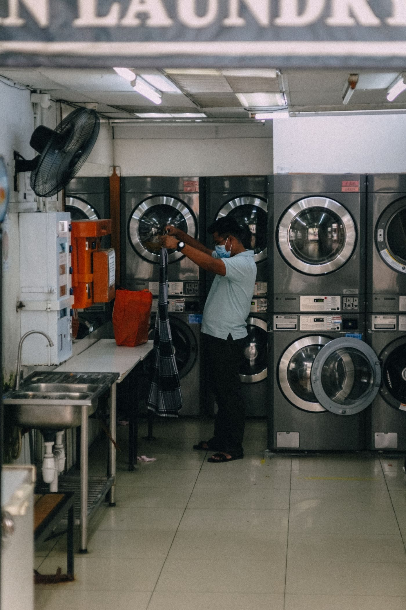
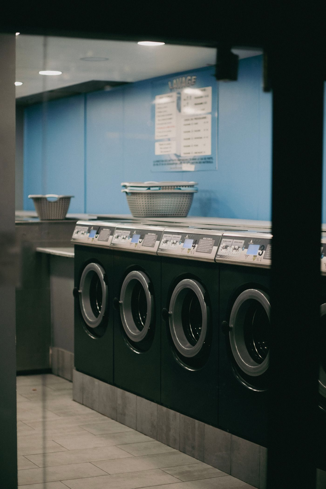

Inside the laundromat


Lexington, Kentucky
A self-serve coin laundry in Lexington, open 24 hours and staffed around the clock, with free WiFi, surveillance, large-capacity washers and dryers, wash-and-fold and drop-off, vending, and an ATM.

24 Hr Meadowthorpe Laundromat is a self-serve coin laundry in Lexington. It is open 24 hours and staffed around the clock, with free WiFi and surveillance, large-capacity washers and dryers, wash-and-fold and drop-off service, vending, and an ATM.
